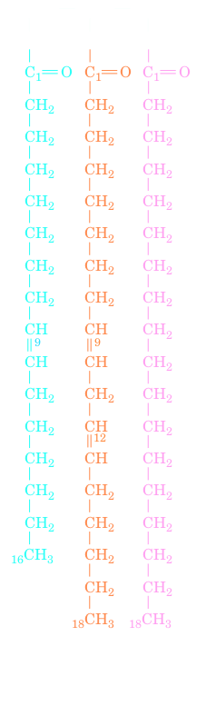

Triacylglycerols
The fats and oils that occur in plants and animals consist largely of mixtures of triacylglycerols (also called triglycerides). Triglycerides at room temperature are usually either solids or semi-solids (fats), or viscous liquids (oils). These nonpolar, water-insoluble substances are fatty acid triesters of glycerol (at left). Triacylglycerols function as energy reservoirs in animals and are therefore their most abundant class of lipids even though they are not components of cellular membranes. Triacylglycerols differ according to the identity and placement of their three fatty acid residues. Most triacylglycerols contain two or three different types of fatty acid residues and are named according to their placement on the glycerol moiety, for example, 1-palmitoleoyl-2-linoleoyl-3-stearoylglycerol.
Note that the -ate ending of the name of the fatty acid becomes -oyl in the fatty acid ester. Fats and oils (which differ only in that fats are solid and oils are liquid at room temperature) are complex mixtures of triacylglycerols whose fatty acid compositions vary with the organism that produced them. Plant oils are usually richer in unsaturated fatty acid residues than animal fats, as the lower melting points of oils imply.


Triacylglycerols Function as Energy Reserves
Fats are a highly efficient form in which to store metabolic energy. This is because triacylglycerols are less oxidized than carbohydrates or proteins and hence yield signifi cantly more energy per unit mass on complete oxidation. Furthermore, triacylglycerols, which are nonpolar, are stored in anhydrous form, whereas glycogen, for example, binds about twice its weight of water under physiological conditions. Fats therefore provide about six times the metabolic energy of an equal weight of hydrated glycogen. In animals, adipocytes are specialized for the synthesis and storage of triacylglycerols. Whereas other types of cells have only a few small droplets of fat dispersed in their cytosol, adipocytes may be almost entirely filled with fat globules. Adipose tissue is most abundant in a subcutaneous layer and in the abdominal cavity. The fat content of normal humans (21% for men, 26% for women) allows them to survive starvation for 2 to 3 months. In contrast, the body’s glycogen supply, which functions as a short-term energy store, can provide for the body’s energy needs for less than a day. The subcutaneous fat layer also provides thermal insulation, which is particularly important for warm-blooded aquatic animals, such as whales, seals, geese, and penguins, which are routinely exposed to low temperatures.
Consumption of trans fats causes cardiovascular disease. The double bonds in unsaturated fats (fats containing unsaturated fatty acid residues) slowly react with the oxygen in air to yield aldehydes and carboxylates of shorter chain length, whose increased volatility results in an unpleasant rancid odor. To increase their stability, commercial oils that are to be used in cooking are partially hydrogenated (treated with H2 in the presence of a metallic catalyst at high temperature and pressure). This eliminates some of their double bonds and thereby increases their melting temperatures (this is how margarine is produced from vegetable oils). Unfortunately, the conditions under which hydrogenation occurs have the undesirable side eff ect of converting some of the cis double bonds to trans double bonds, yielding trans fats. In recent decades, it has become increasingly clear that the consumption of significant amounts of trans fats causes a large increase in the incidence of cardiovascular disease by increasing the level of cholesterol in the blood. As a consequence, several European countries have banned foods containing trans fats. In the United States, the trans fat level must be stated on a food’s Nutritional Facts label, and several municipalities have banned their use by restaurants.